data(hd_data, package = "medisr")12 When in doubt - plot it out
Warning
🚧 This section is being actively worked on. 🚧
“The simple graph has brought more information to the data analyst’s mind than any other device.” — John Tukey
12.1 Pree-class Literature
- weissgerber et al 2015 plos biology
-
data viz guide of the Royal StatisticalS ociety
- Chapters 1-4: Why we visualise data; Principles and elements of visualisations; Choosing a visualisation type; Styling for accessibility
- astrazeneca blog post
- data.europa.eu blog post on Honest Charts
12.2 Case session 4: “I want to see this association for myself”
At AalboR Statistical Hospital, a new exercise-based cardiac assessment protocol has recently been introduced following an initial data review suggesting that patients with lower max heart rate are more likely to have underlying heart disease. Based on this, some clinicians have started using the max heart rate during exercise as a quick indicator when evaluating chest pain patients.
However, during a recent internal meeting, a cardiologist raises a concern:
“I’m not convinced this applies to our patients. Especially those who develop chest pain during exercise — their heart rate response might behave differently. If that’s true, we could be misinterpreting results in a subgroup of patients. I want to see this association for myself”
You are asked to explore the hospital’s patient data to assess whether the relationship between Age and max heart rate — and the interpretation of max heart rate more generally — appears consistent across patients, or whether it differs depending on exercise-induced angina, sex, or other patient characteristics.
You are tasked with the decision: Should this new assessment approach be used broadly, or are there patient groups where it may be misleading?
12.3 Reading Task: Why Visualize Data?
In medicine, pharmaceuticals, and healthcare, data is everywhere — patient records, clinical trials, drug efficacy studies, hospital operations, and more. But raw numbers alone don’t tell the full story. Data visualization turns complex information into clear, actionable insights which effectively aids you (and your future colleagues) make faster, smarter decisions.
Which of these are easiest to draw information from:
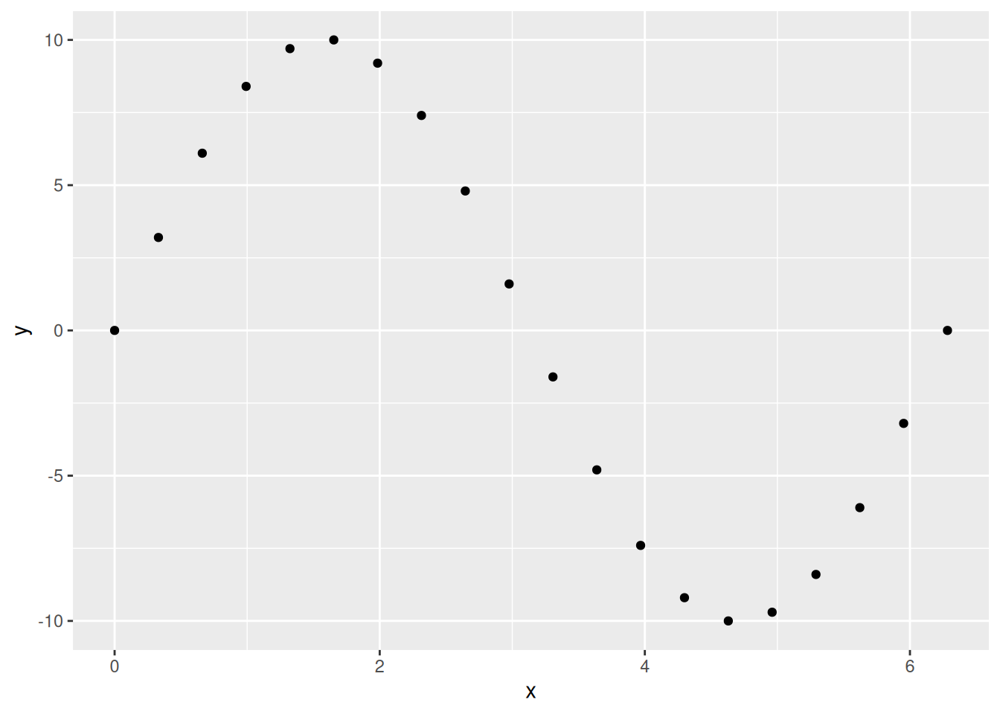
| x | y |
|---|---|
| 0.0000000 | 0.0 |
| 0.3306940 | 3.2 |
| 0.6613879 | 6.1 |
| 0.9920819 | 8.4 |
| 1.3227759 | 9.7 |
| 1.6534698 | 10.0 |
| 1.9841638 | 9.2 |
| 2.3148577 | 7.4 |
| 2.6455517 | 4.8 |
| 2.9762457 | 1.6 |
| 3.3069396 | -1.6 |
| 3.6376336 | -4.8 |
| 3.9683276 | -7.4 |
| 4.2990215 | -9.2 |
| 4.6297155 | -10.0 |
| 4.9604095 | -9.7 |
| 5.2911034 | -8.4 |
| 5.6217974 | -6.1 |
| 5.9524913 | -3.2 |
| 6.2831853 | 0.0 |
Good visualizations help you:
- Spot patterns (e.g., a sudden spike in adverse drug reactions)
- Communicate findings (e.g., convincing a hospital board to adopt a new protocol)
- Avoid mistakes (e.g., misreading a critical lab value in a dense table)
The Royal Statistical Society propose five key reasons to visualize data
- Grab Attention
A dashboard with a red alert trendline for rising post-op infections will get noticed faster than a 10-page report. Example: A heatmap showing regional disease outbreaks helps public health teams act quickly.
- Improve access to information
Text: “The Phase III trial showed a 12% reduction in mortality (p<0.05) with Drug X vs. placebo, but subgroup analysis revealed no benefit in patients over 65.” Visual: A forest plot or bar chart shows this in seconds—no PhD in stats required. Why it matters: Doctors, nurses, and executives don’t have time to parse dense tables.
- Increase precision
Misreading a table could lead to:
- Wrong doses prescribed.
- Flawed trial conclusions (e.g., missing a safety signal).
A clear scatter plot or box plot reduces ambiguity.
- Bolster credibility
Claim: “Our new drug reduces symptoms by 30%!” Without visualization: Skepticism (“Where’s the proof?”). With visualization: A Kaplan-Meier curve or before/after comparison lets stakeholders see the evidence. Real-world impact: Regulators and investors demand transparency—visuals provide it.
- Summarise content
A single infographic can replace pages of text in: Patient education (e.g., “How this vaccine works”). Boardroom presentations (e.g., “Why we should expand this clinic”). Example: A Sankey diagram showing patient flow in a hospital highlights bottlenecks at a glance.
Data visualization isn’t just about “making things look nice”. It’s a critical skill for being able to evaluate any scientific claim. Through this class, we’ll dive into how to choose the right visualization for a given data structure and how to avoid common mistakes.
12.3.1 Discussion activity: Your experience with data visualization:
- Where do you see data visualization “in the wild”?
- What makes you trust a figure/graph? What could make you distrust it?
- What’s one type of data you’ve seen in your studies/clinical rotations that was able to provide a lot of (valuable) information using a visualization?
12.4 The name of the game:
Do older patients have higher or lower max heart rate than younger patients? You probably already have an answer, but try to make your answer precise. What does the relationship between age and max heart rate look like? Is it positive? Negative? Linear? Nonlinear? Does the relationship vary by the presence of exercise-induced angina in the patient? How about by the sex? Let’s create visualizations that we can use to answer these questions.
12.5 The Cleveland Heart Disease data frame
To make the discussion easier, let’s define some terms (we use the definition from (1))
A variable is a quantity, quality, or property that you can measure.
A value is the state of a variable when you measure it. The value of a variable may change from measurement to measurement.
An observation is a set of measurements made under similar conditions (you usually make all of the measurements in an observation at the same time and on the same object). An observation will contain several values, each associated with a different variable. We’ll sometimes refer to an observation as a data point.
Tabular data is a set of values, each associated with a variable and an observation. Tabular data is tidy if each value is placed in its own “cell”, each variable in its own column, and each observation in its own row.
In this context, a variable refers to an attribute of all the patients, and an observation refers to all the attributes of a single patient.
Load the data and type the name of the data frame in the console and R will print a preview of its contents.
hd_data# A tibble: 303 × 15
...1 Age Sex ChestPain RestBP Chol Fbs RestECG MaxHR ExAng
<int> <int> <int> <chr> <int> <int> <int> <int> <int> <int>
1 1 63 1 typical 145 233 1 2 150 0
2 2 67 1 asymptomatic 160 286 0 2 108 1
3 3 67 1 asymptomatic 120 229 0 2 129 1
4 4 37 1 nonanginal 130 250 0 0 187 0
5 5 41 0 nontypical 130 204 0 2 172 0
6 6 56 1 nontypical 120 236 0 0 178 0
7 7 62 0 asymptomatic 140 268 0 2 160 0
8 8 57 0 asymptomatic 120 354 0 0 163 1
9 9 63 1 asymptomatic 130 254 0 2 147 0
10 10 53 1 asymptomatic 140 203 1 2 155 1
# ℹ 293 more rows
# ℹ 5 more variables: Oldpeak <dbl>, Slope <int>, Ca <int>, Thal <chr>,
# HD <chr>Among the variables in hd_data are:
ExAng: a penguin’s species (Adelie, Chinstrap, or Gentoo).Age: length of a penguin’s flipper, in millimeters.MaxHR: body mass of a penguin, in grams.
12.6 Ultimate goal
Our ultimate goal in this chapter is to recreate the following visualization displaying the relationship between max heart rate vs. age of patients with and without exercise-induced angesia.

12.7 Hallo {ggplot2}
R has several systems for making graphs, but ggplot2 is one of the most elegant and most versatile. ggplot2 implements the grammar of graphics, a coherent system for describing and building graphs. With ggplot2, you can do more and faster by learning one system and applying it in many places.
ggplot2 is an implementation of the “Grammar of Graphics” (“gg”). This is a powerful approach to creating plots because it provides a set of structured rules (a “grammar”) that allow you to expressively describe components (or “layers”) of a graph. Since you are able to describe the components, it is easier to then implement those “descriptions” in creating a graph. According to (2), there are at least four aspects to using ggplot2 that relate to its “grammar”:
- Aesthetics,
aes(): How data are mapped to the plot, including what data are put on the x and y axes, and/or whether to use a colour for a variable. - Geometries,
geom_functions: Visual representation of the data, as a layer. This tells ggplot2 how the aesthetics should be visualized, including whether they should be shown as points, lines, boxes, bins, or bars. - Scales,
scale_functions: Controls the visual properties of thegeom_layers. Can be used to modify the appearance of the axes, to change the colour of dots from, e.g., red to blue, or to use a different colour palette entirely. - Themes,
theme_functions ortheme(): Directly controls all other aspects of the plot, such as the size, font, and angle of axis text, and the thickness or colour of the axis lines.
There is a massive amount of features in ggplot2. Thankfully, ggplot2 was specifically designed to make it easy to find and use its functions and settings using tab auto-completion. To demonstrate this feature, try typing out geom_ and you’ll start seeing a menu pop-up with a list of functions that start with geom_. You can then use the arrow keys to move up and down the list and then hit either Enter or Tab to select the function. You can use this with scale_ or the options inside theme(), for instance try typing out theme(axis. to see all options for the axis a list of theme settings related to the axis will pop up.
12.8 Plot one continuous variable
Since low max heart rate has been proposed as a risk factor for heart disease, let’s check out the distribution of max heart rate among the patients. There are two good geoms for examining distributions for continuous variables: geom_density() and geom_histogram(). Before we can make a plot, we need to tell ggplot2 what data we are using and which variable to put in which axis or dimension. For that we use the ggplot() function with the aes() function used inside of it.
docs/session4.R
hd_data |>
ggplot(aes(x = MaxHR))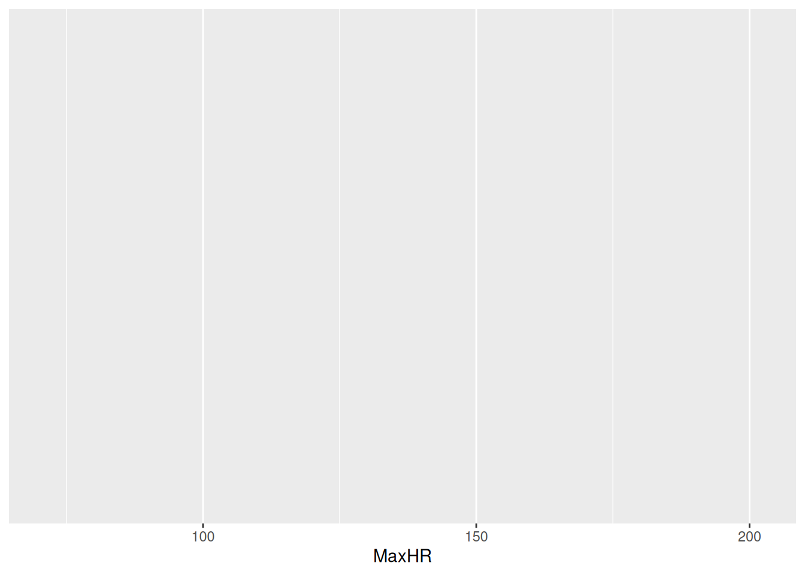
Run this code by using mac=Command-Entermac=Command-Enter. You’ll get a blank plot. That’s because we haven’t told ggplot2 what kind of plot we want to make, which needs a geom_ function.
We’ll start with creating a histogram, which is a useful way of visualizing the distribution of a continuous variable. We do that with geom_histogram(), but you can easily replace the code with geom_density() to make a density plot. Note that it is good practice to always create a new line after the +.
docs/session4.R
ggplot(hd_data, aes(x = MaxHR)) +
geom_histogram()`stat_bin()` using `bins = 30`. Pick better value `binwidth`.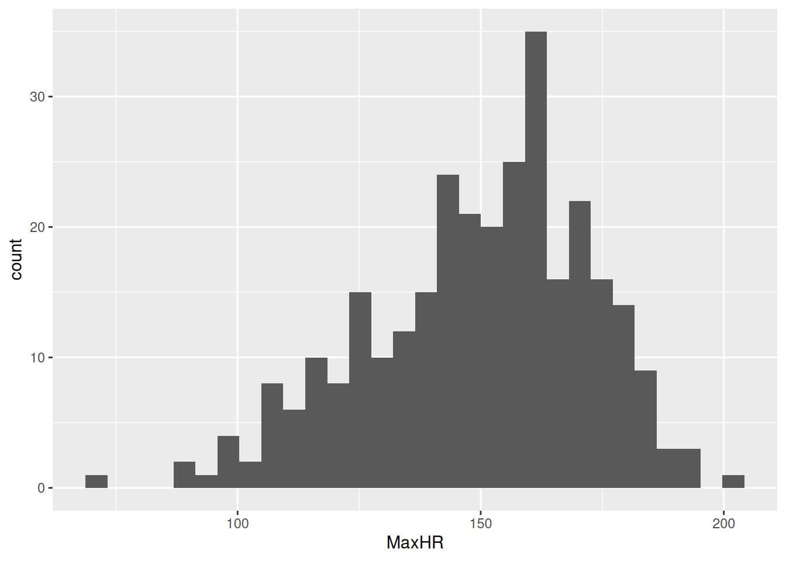
Tip
Our plot shows that, for the most part, there is a even distribution with MaxHR.
12.9 🧑💻 Exercise: Rotate the axis of a plot
For several reasons, switching the x and y axis can be very helpful for some data visualization purposes. But how do we define x and y in the previous plot - we only set the x-variable!?
Luckily, ggplot2 has a need function for this purpose, named coord_flip(). Try flipping the coordinates of the histogram of the max heart rate.
hd_data |>
ggplot(___(___ = ___)) +
geom_histogram() +
coord_flip()Click for the solution. Only click if you are struggling instead of using Chat models.
```{r}
#| label: solution-discrete-variables
#| eval: false
#| code-fold: true
#| code-summary: >-
#| **Click for the solution**. Only click if you are struggling instead of
#| using Chat models.
# This is a potential solution
hd_data |>
ggplot(hd_data, aes(x = MaxHR)) +
geom_histogram()
coord_flip()
```12.10 The box plot
We can see many things from the histogram:
- The distribution looks approximately normal
- The mean is somewhere around 150 BPM
- Most data is between 100-200 BPM
- From the looks of it, there might be one or two outliers in our dataset.
But can we help the reader identify these information using data visualization? Yes - yes, we can.
Take a close look at the humble boxplot, also known as the box-and-whisker plot:

docs/session4.R
hd_data |>
ggplot(aes(x = MaxHR)) +
geom_boxplot() +
coord_flip()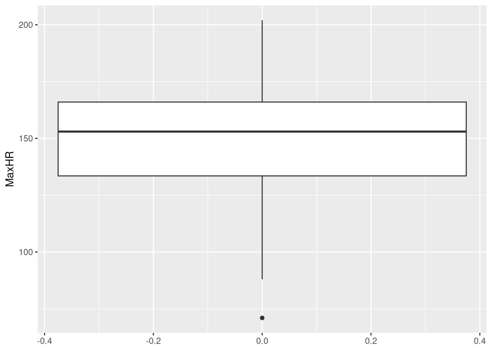
This figure is much better at showing the mean, IQR, and outliers (defined as > 1.5 IQR away from the 1st and 3rd quantiles). However, it leaves out the information on count (how msuch data?) and spikes (any values particularly popular?)
It is a very popular plot for comparing continuous variables between two groups. This is useful to us as well, so let’s try plotting this stratified for patients with(out) exercise-induced angesia
docs/session4.R
hd_data |>
ggplot(aes(x = ExAng, y = MaxHR)) +
geom_boxplot()Warning: Orientation is not uniquely specified when both the x and y aesthetics
are continuous. Picking default orientation 'x'.Warning: Continuous x aesthetic
ℹ did you forget `aes(group = ...)`?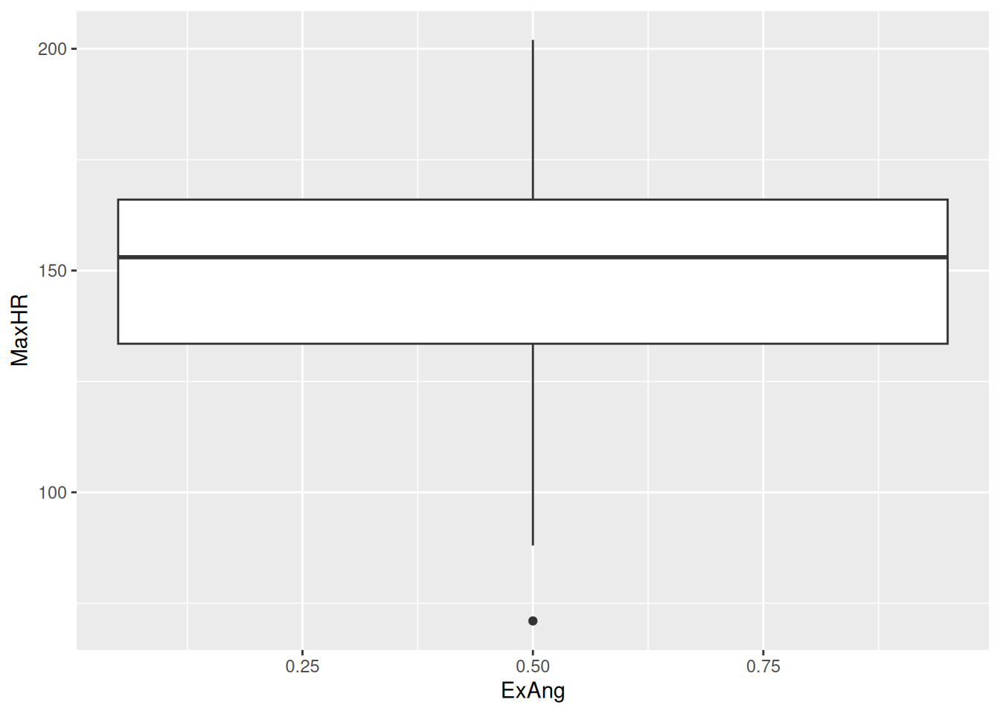
Wait a minute… We still only have one box plot and the value is at 0.5 - but when we inspect hd_data$ExAng or View(hd_data$), all values are 0 or 1?!
The problem, we realise, is the type - it’s numeric (or dbl for double precision floating-point data type). We actually consider it a factor indicating either yes/no. Let’s change the type as a factor using the factor function to correct this mistake.
docs/session4.R
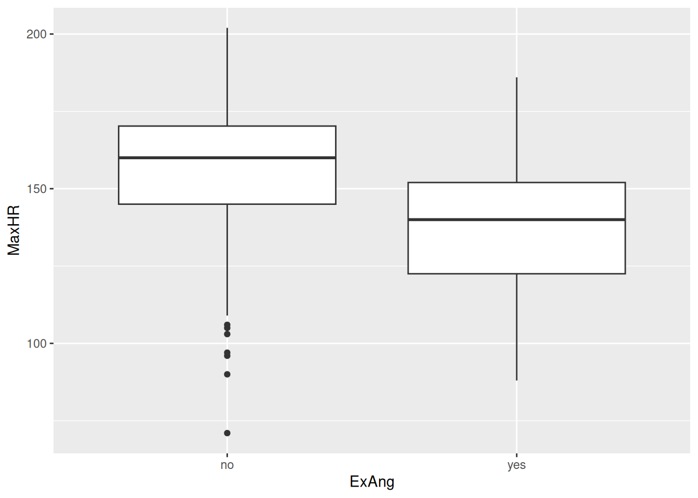
Aha! It works. We now see the no/yes in the x-axis.
12.11 The bar plot
hd_data |>
ggplot(ggplot2::aes(ExAng, MaxHR)) +
geom_col()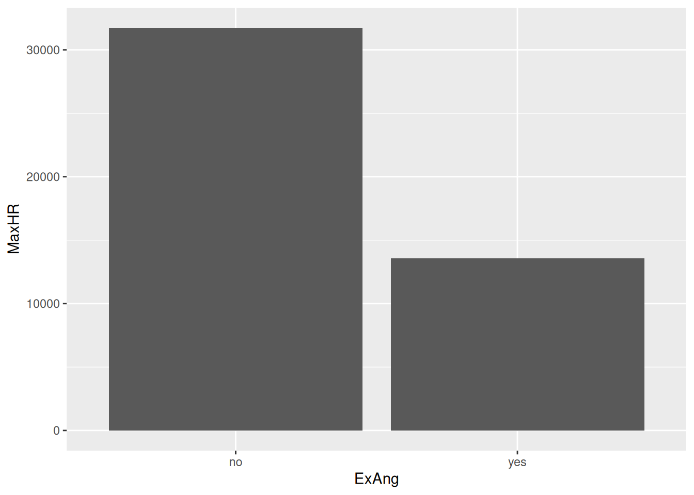
Hmm… I’ve never seen a human being with a max heart rate of +30.000 - this must be a mistake!
It turns out that the geom_col takes the sum of all observations. We wanted the mean!
docs/session4.R
hd_data |>
ggplot(ggplot2::aes(ExAng, MaxHR)) +
stat_summary(geom = "col", fun = mean)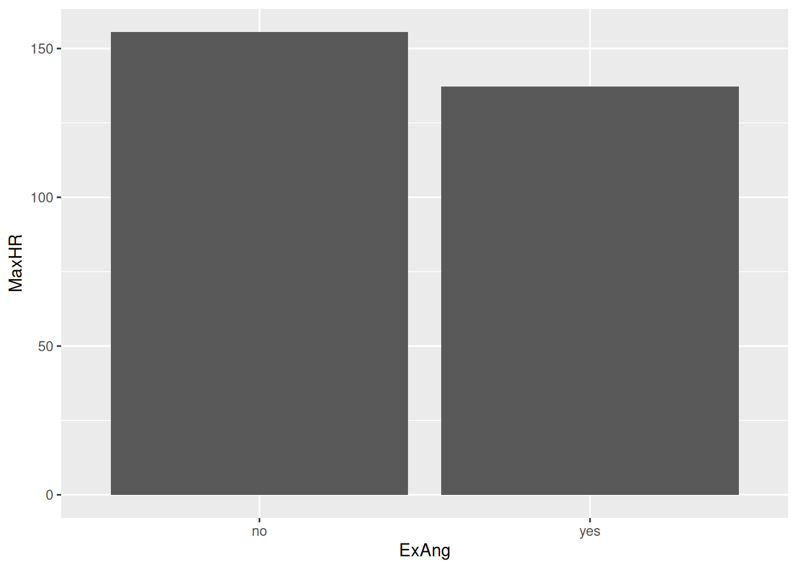
This looks much better!
12.12 📖 Reading task: Be careful with certain plots
Time: ~5 minutes
Before continuing with plotting, let’s take a minute to talk about a commonly used barplots with mean and error bars. In all cases, barplots should only be used for discrete (categorical) data where you want to show counts or proportions. As a general rule, they should not be used for continuous data. This is because the commonly used “bar plot of means with error bars” actually hides the underlying distribution of the data. To have a better explanation of this, you can read the article on why to avoid barplots after the workshop. The image below was taken from that paper, and briefly demonstrates why this plot type is not useful.
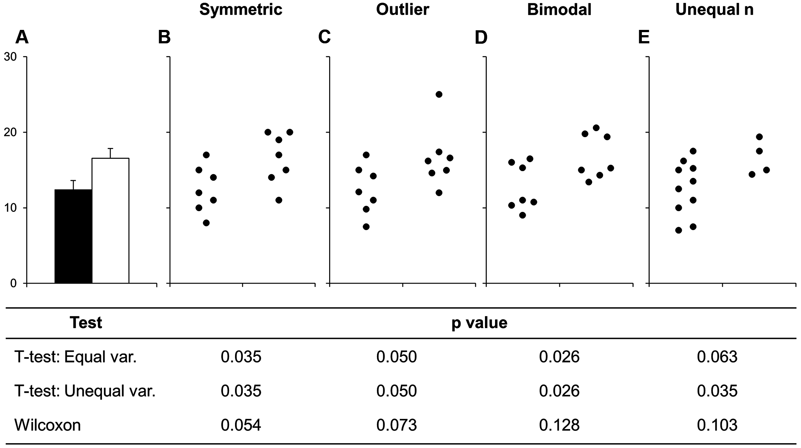
If you do want to create a barplot, you’ll quickly find out that it is actually quite hard to do in ggplot2. The reason it is difficult to create in ggplot2 is by design: it’s a bad plot to use, so use something else.

docs/session4.R
hd_data |>
ggplot(ggplot2::aes(ExAng, MaxHR)) +
stat_summary(geom = "col", fun = mean) +
geom_jitter()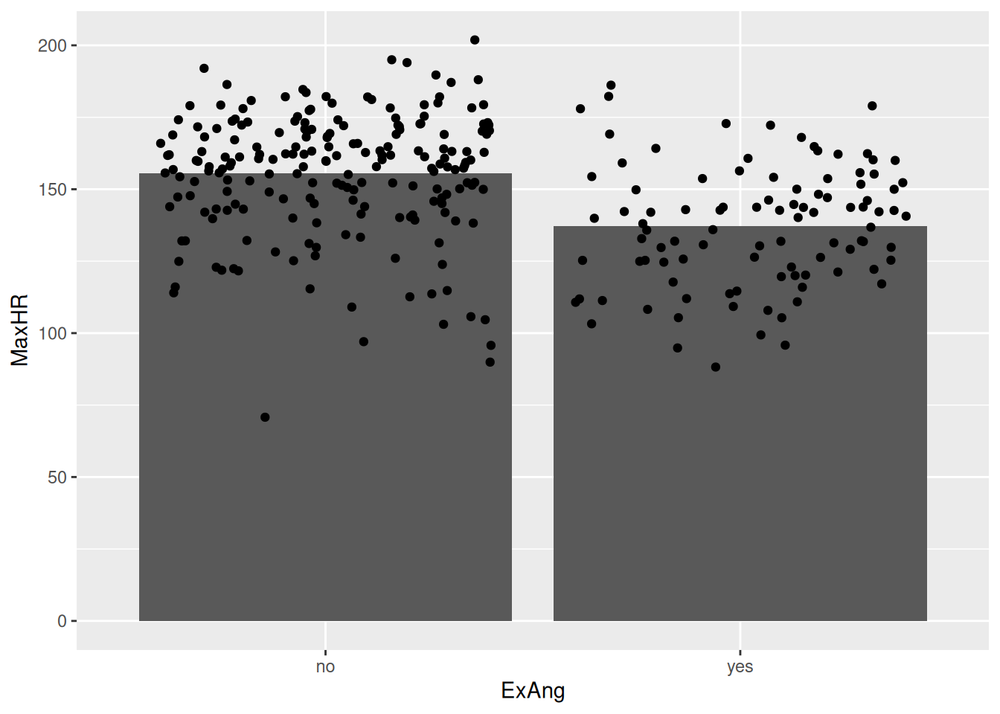
At least, consider adding the points too. It’s as simple as adding another ggplot-layer
12.13 The scatter plot
Now we have learned how to do a simple bar plot — and why not to use it — we proceed with the scatter plot. It is as easy as geom_point():
docs/session4.R
hd_data |>
ggplot(aes(Age, MaxHR)) +
geom_point()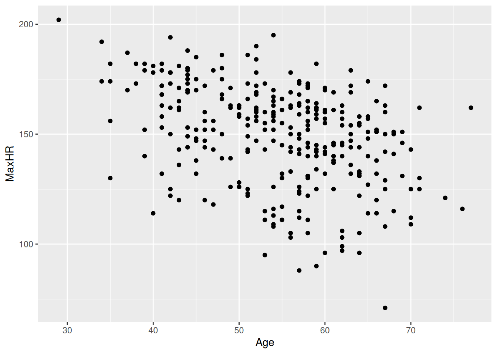
Great! Now we have a great looking scatter of the max hear rate as a function of age. But how do we now visually separate the patient groups based on exercises-induced angesia? A common solution would be to color the points belonging to each group a different color! Let’s try this:
docs/session4.R
hd_data |>
ggplot(ggplot2::aes(Age, MaxHR, color = ExAng)) +
geom_point()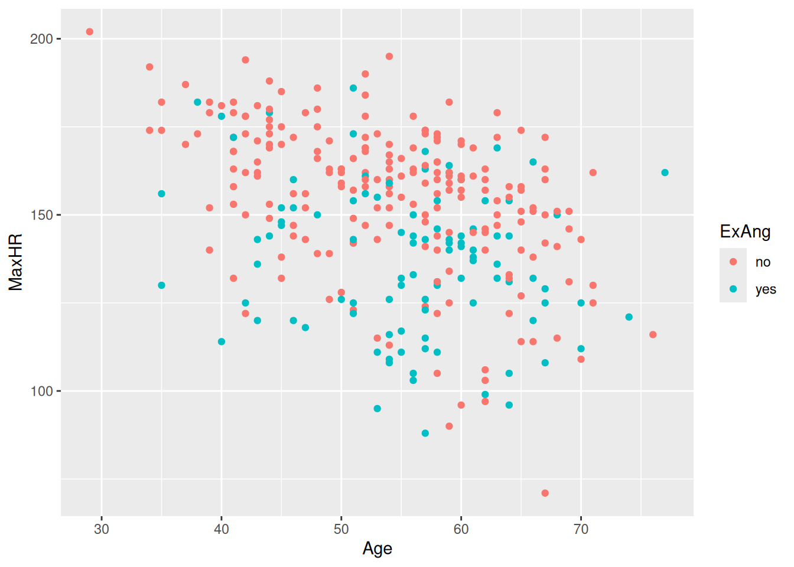
That did it! Now, recall we were interested in whether the two groups differ in their trend.
We want to ask:
Do they follow similar trends?
We can try to imagine a line passing through the points but this is somewhat a subjective guessing tasks. Luckily, ggplot2 has another trick up it’s sleave:
docs/session4.R
hd_data |>
ggplot(ggplot2::aes(Age, MaxHR, color = ExAng)) +
geom_point() +
geom_smooth()`geom_smooth()` using method = 'loess' and formula = 'y ~ x'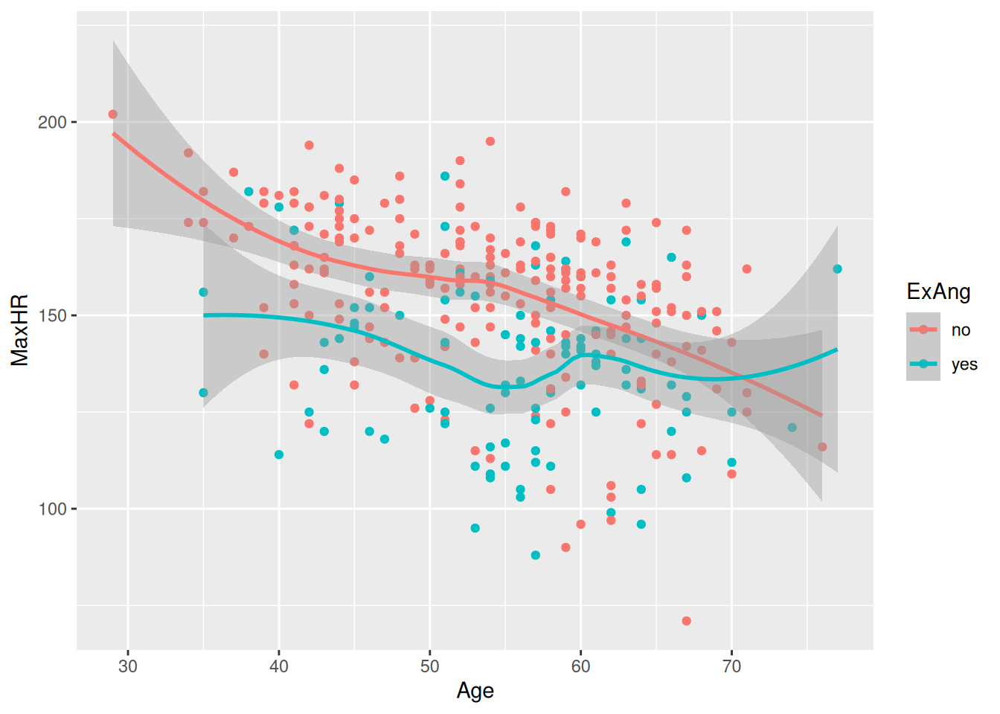
The geom_smooth adds a line for each group! That is exactly what we wanted! Now, we can report back to the clinicians what we found.
12.14 Saving your plots
Once you’ve made a plot, you might want to get it out of R by saving it as an image that you can use elsewhere. That’s the job of ggsave(), which will save the plot most recently created to disk:
hd_data |>
ggplot(ggplot2::aes(Age, MaxHR, color = ExAng)) +
geom_point() +
geom_smooth()
ggsave(filename = "subgroup-association.png")This will save your plot to your working directory (which should be the root of your project folder, if you’re in your R-project (see session 1).
12.15 Even statistics fail at what data visualization makes obvious
| set | x_mean | x_sd | y_mean | y_sd | r |
|---|---|---|---|---|---|
| 1 | 9 | 3.3 | 7.5 | 2 | 0.82 |
| 2 | 9 | 3.3 | 7.5 | 2 | 0.82 |
| 3 | 9 | 3.3 | 7.5 | 2 | 0.82 |
| 4 | 9 | 3.3 | 7.5 | 2 | 0.82 |
ggplot(dat, aes(x, y)) +
geom_point(size = 2, colour = "#3366AA") +
geom_smooth(method = "lm", se = FALSE, colour = "#CC4444") +
facet_wrap(~set) +
theme_minimal(base_size = 13) +
labs(
title = "Anscombe's quartet",
subtitle = "Nearly identical summary statistics, very different relationships",
x = "x",
y = "y"
)`geom_smooth()` using formula = 'y ~ x'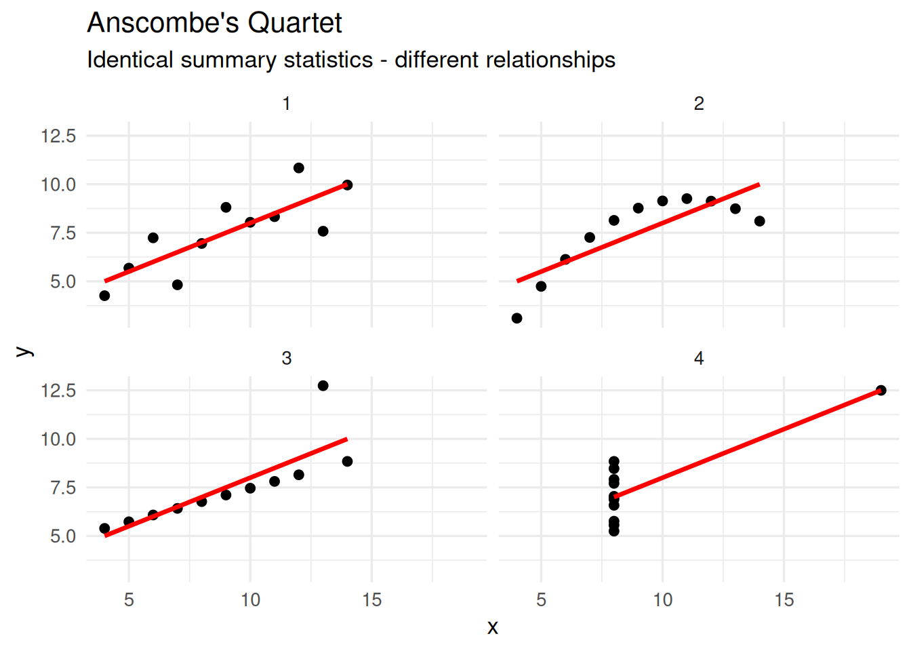
The infamous dataset: Anscombe’s Quartet.
12.16 Summary
Pharma: Accelerating drug approvals with clear trial data. Hospitals: Improving patient outcomes through better decision-making. Industry: Convincing stakeholders (from doctors to CEOs) with evidence.
Examples
- Present clinical trial results to regulators (e.g., FDA, EMA) or investors.
- Monitor hospital performance (e.g., infection rates, patient wait times).
- Compare drug efficacy across demographics in pharma R&D.
- Explain risks/benefits to non-experts (patients, policymakers, or even journalists).
A well-designed chart can mean the difference between confusion and clarity — between a rejected proposal and an approved drug.
- Use the “Grammar of Graphics” approach together with the ggplot2 package within tidyverse to plot your data.
- Prioritize plotting raw data instead of summaries whenever possible.
-
ggplot2 has 4 levels of grammar:
aes()to say which data to plot and how,geom_to set the kind of plot to use,scale_to make the plot prettier, andtheme()to control the specifics of the plot. We covered theaes()andgeom_layers. - Only use barplots for discrete values. If applying them on continuous variables, it hides the distribution of the data.
- Use
geom_point()to create a scatterplot of two continuous variables. - Use
geom_smooth()to add a smoothing line to the scatterplot. - Use
geom_bar()to create a barplot of discrete variables.
12.17 📖 Reading task: Basic principles for creating graphs
(2) Making graphs in R is relatively easy compared to other programs and can be done with very little code. Because it takes a few lines of code to create multiple types of plots, it gives you some time to consider: why you are making them; whether the graph you’ve selected is the most appropriate for your data or results; and how you can design your graphs to be as accessible and understandable as possible.
To start, here are some tips for making a graph:
- Whenever possible or reasonable, show raw data values rather than summaries (e.g. means).
- Though commonly used in scientific papers, avoid barplots with means and error bars as they greatly misrepresent the data (we’ll cover why later).
- Use colour to highlight and enhance your message, and make the plot visually appealing.
- Use a colour-blind friendly palette to make the plot more accessible to others (more on this later too).
12.18 Plotting two continuous variables
There are many more types of “geoms” to use when plotting two variables. Your choice of which one to use depends on what you are trying to show or communicate, and the nature of the data. Usually, the variable that you “control or influence” (the independent variable) in an experimental setting goes on the x-axis, and the variable that “responds” (the dependent variable) goes on the y-axis.
For now, let’s focus on plotting continuous data, since our data has a lot of continuous data and often in research we work with more continuous than discrete variables. When you have two continuous variables, some geoms to use are:
-
geom_point(), which is used to create a standard scatterplot. Since it is so commonly used, we’ll use this one. -
geom_hex(), which is used to replacegeom_point()when your data are massive and creating points for each value takes too long to plot. -
geom_smooth(), which applies a “regression-type” line to the data.
Let’s check out how BMI may influence the area under the curve for blood glucose after the meal using a point plot. The area under the curve of glucose is a measure of how much glucose is present in the blood over a fixed period of time. A higher area under the curve for glucose usually suggests that the body has a harder time handling glucose. But, like everything in biology, it’s more complex than that. But we won’t cover that complexity in this workshop.
Like with the previous plot we created using BMI, we’ll put BMI on the x axis in the aes() function, since we are assuming that BMI “causes” or contributes to higher glucose in the blood after a meal. Then we put the area under the curve for glucose (auc_pg) on the y axis, since it will be “responding to” or “caused by” BMI.
docs/learning.qmd
#ggplot(post_meal_data, aes(x = BMI, y = auc_pg)) +
# geom_point()Run this code chunk with mac=Command-Entermac=Command-Enter. You’ll see a scatterplot of BMI and the area under the curve for glucose. Notice how there is a bit of an increase in glucose as BMI increases? Because ggplot2 works in layers, we can add another layer to the plot by adding a + after the geom_point() function. Let’s add a smoothing line to the plot to see if there is a general trend between BMI and glucose by using geom_smooth().
Run this code chunk with mac=Command-Entermac=Command-Enter and we’ll see a scatterplot of age and the max heart rate with a smoothing line on top of the points. The colors represent the sub-groups: exercises-induced angesio (yes/no).
This makes a nice smoothing line through the data and gives us an idea of general trends or relationships between the two variables.
12.19 Survey
Please complete the survey for this session: